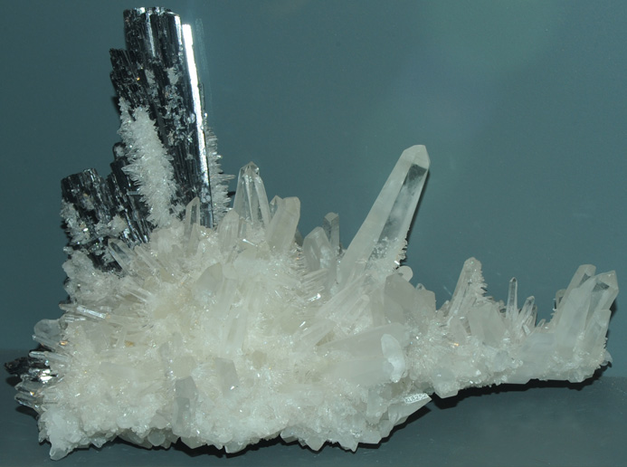

|

| MnWO4
These samples of hubnerite are displayed in the Smithsonian Museum of Natural History. Hubnerite is a oxide mineral of tungsten and manganesewith the composition MnWO4. The sample at left is about 25 cm across and is from Huallopon mine, Pasto Bueno, Ancash, Peru. A forest of quartz crystals surround the shiny, gray hubnerite.
|